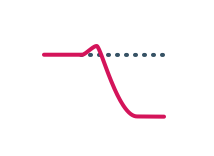

The Filter node is a 12db/octave low-pass filter with resonance. To change the filter cutoff frequency and resonance, drag on the filter graph.
The Hz input controls the cutoff frequency of the filter in units of Hertz. The filter's cutoff frequency ranges between 20 Hz and half the current sample rate (e.g. 22 kHz for standard 44 kHz audio).
Resonance amplifies the frequencies close to the cutoff frequency. Resonance may be modulated using the res input. Range: 0 to 1.
In the future, this node will be improved with more filter types.